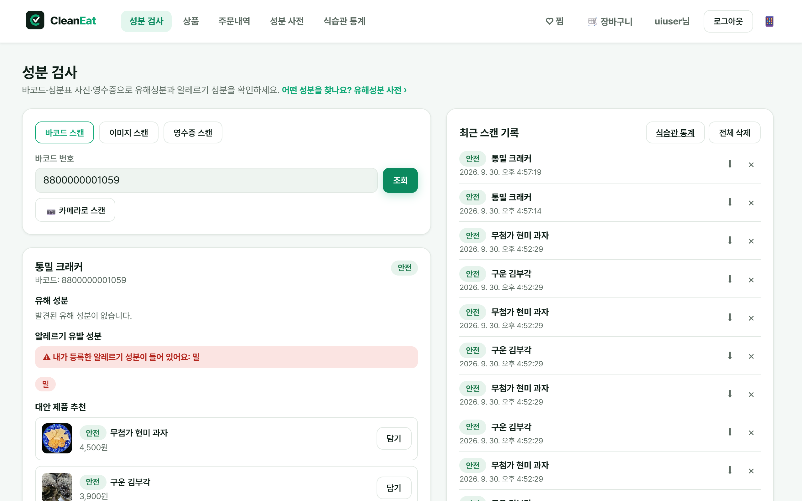
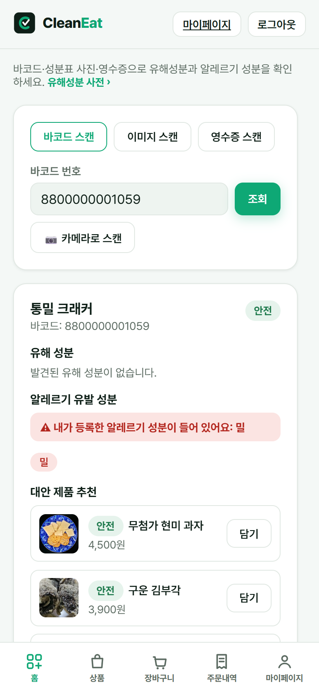
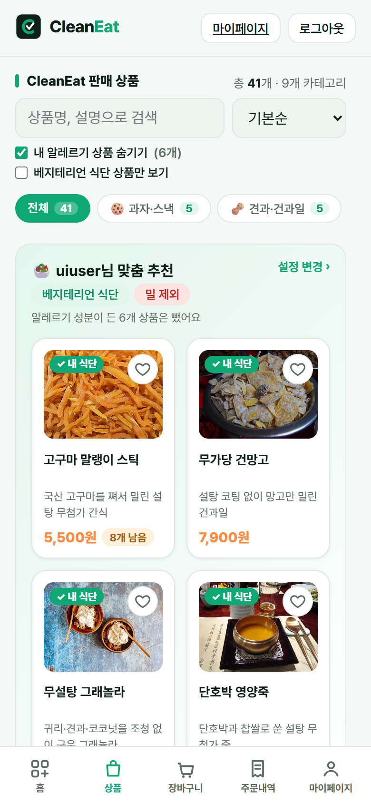
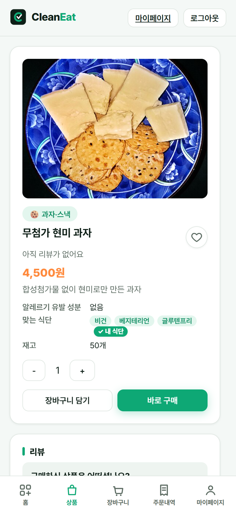
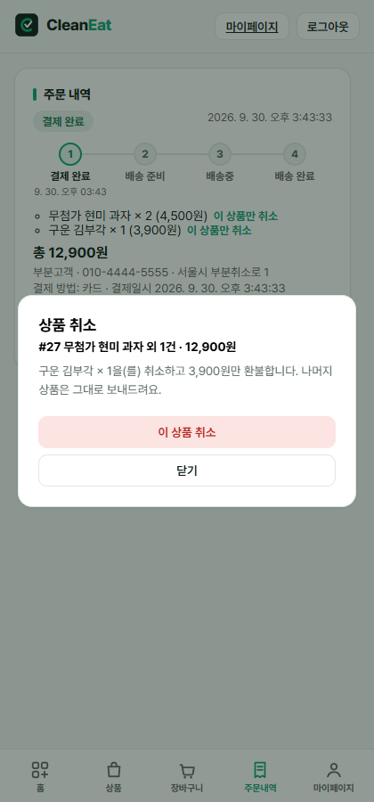
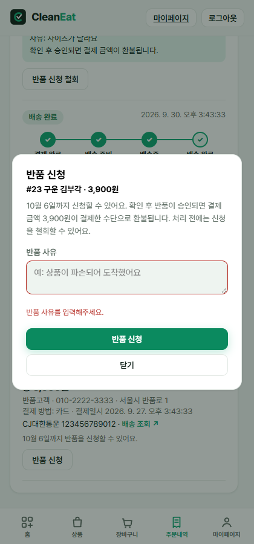
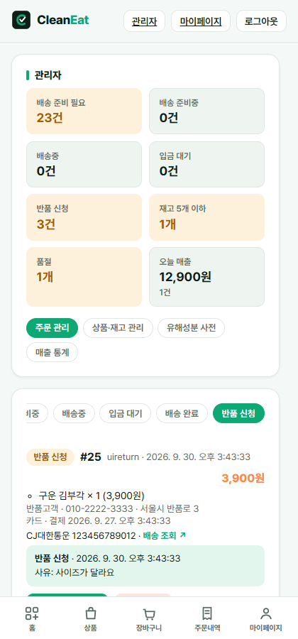
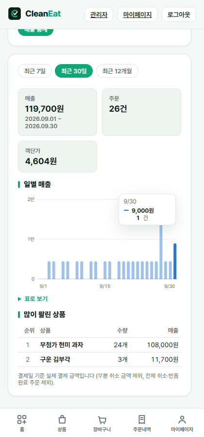

바코드·성분표 사진 한 장으로 유해성분과 알레르기를 확인하고, 안심하고 먹을 수 있는 식품을 바로 구매하는 서비스
구분
개인 프로젝트 · 풀스택 (기획 · 백엔드 · 프론트엔드 · 배포)
Backend
Java 21 · Spring Boot 3.5 · Spring Security · JPA · Flyway
Frontend
React 19 · TypeScript · Vite
Infra
Docker · GitHub Actions · PostgreSQL / MySQL
GitHub
github.com/cjsrudgh98-crypto/CleanEat

OVERVIEW프로젝트 개요
식품 뒷면의 성분표는 길고 어렵습니다. 알레르기가 있거나 비건·글루텐프리 같은 식단을 지키는 사람은 제품을 살 때마다 성분을 하나하나 확인해야 합니다.
CleanEat은 성분 분석과 쇼핑몰을 하나로 합쳐 “확인하고 → 대안을 찾고 → 바로 사는” 흐름을 한 곳에서 끝냅니다.
결제·취소·반품·재고·매출 통계까지 실제 운영을 전제로 만들었습니다.
74REST API 엔드포인트
20JPA 엔티티
335자동 테스트 (백 283 · 프론트 52)
3종DB 지원 (H2 · MySQL · PostgreSQL)
01 SCAN
스캔
바코드 촬영·입력, 성분표 사진이나 영수증 업로드 (Tesseract OCR)
→
02 ANALYZE
분석
유해성분 사전 + 내 알레르기·식단 기준으로 위험도(안전/주의/위험) 판정
→
03 BUY
대안 · 구매
더 안전한 대안 추천 → 장바구니 → 토스페이먼츠 결제 → 배송·취소·반품
🔍성분 분석
바코드 조회: 자체 DB에 없으면 Open Food Facts에서 가져옴
성분표·영수증 OCR (tess4j)
내 알레르기 성분 강조 경고, 대안 제품 추천
스캔 결과 한글 PDF 리포트, 기간별 식습관 통계
🛒쇼핑몰
알레르기 상품 숨김·내 식단 표시 맞춤 상품 목록
장바구니·찜·리뷰 (구매자만), 재입고 알림 메일
토스페이먼츠 카드·가상계좌 결제, 웹훅 입금 확인
전체·상품 단위 부분 취소, 반품 신청→승인/거절
🛠관리자
대시보드: 배송 준비·입금 대기·반품·재고 부족·오늘 매출
주문 상태 관리, 송장 등록, 관리자 취소·반품 처리
상품·재고·유해성분 사전 관리
7일/30일/12개월 매출 차트와 판매 순위
🔐회원 · 보안
JWT 인증 + Google·Kakao·Naver 소셜 로그인
이메일 인증번호 가입, 비밀번호 찾기
비밀번호 변경 시 기존 토큰 즉시 무효화
로그인·인증번호 요청 Rate Limit
CleanEat · 포트폴리오2
SCREENS주요 화면 · 사용자
모바일에서는 하단 탭바, 데스크톱에서는 상단 내비게이션을 쓰는 반응형 SPA입니다.

성분 검사 결과통밀 크래커를 스캔하면 내가 등록한 알레르기 성분(밀)을 바로 경고하고, 대안 제품을 추천합니다.

맞춤 상품 목록알레르기 상품을 숨기고, 내 식단(베지테리언)에 맞는 상품에 “내 식단” 표시를 붙입니다.

상품 상세알레르기 성분, 맞는 식단, 재고를 보여주고 장바구니 담기·바로 구매로 이어집니다.

상품 단위 부분 취소여러 상품 중 하나만 취소하고 그 금액만 환불, 나머지는 그대로 배송합니다.

반품 신청배송 완료 후 기한 안에 사유를 입력해 신청하고, 처리 전에는 철회할 수 있습니다.
주문 상태 흐름
결제 대기→결제 완료→배송 준비→배송중→배송 완료→반품 신청→반품 완료
가상계좌는 “입금 대기”를 거쳐 웹훅으로 결제 완료. 결제 완료·배송 준비 단계에서는 전체/부분 취소가 가능합니다.
CleanEat · 포트폴리오3
SCREENS주요 화면 · 관리자
운영자가 처리해야 할 일을 먼저 보여주는 대시보드와, 실제 결제 금액 기준의 매출 통계를 제공합니다.

관리자 대시보드 · 반품 처리배송 준비 필요, 입금 대기, 반품 신청, 재고 5개 이하, 품절, 오늘 매출을 타일로 보여주고 상태별 주문 목록에서 바로 처리합니다.

매출 통계기간별 매출·주문 수·객단가, 일별/월별 막대 차트(툴팁·표 보기), 많이 팔린 상품. 부분 취소 금액과 취소·반품 주문은 제외합니다.
▶
시연 영상 (1분 16초)
바코드 스캔 → 알레르기 경고 → 대안 추천 → 맞춤 상품 → 결제 화면 → 부분 취소 → 반품 신청 → 관리자 대시보드 → 매출 통계